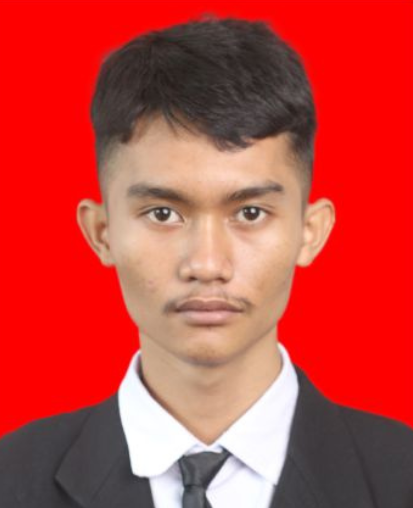
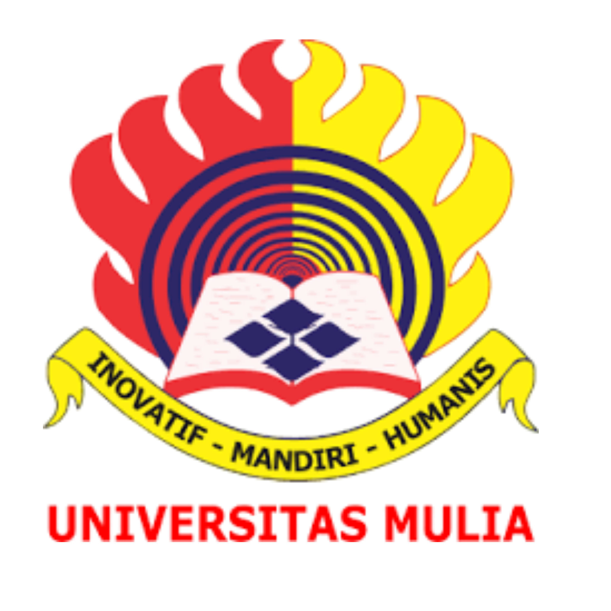
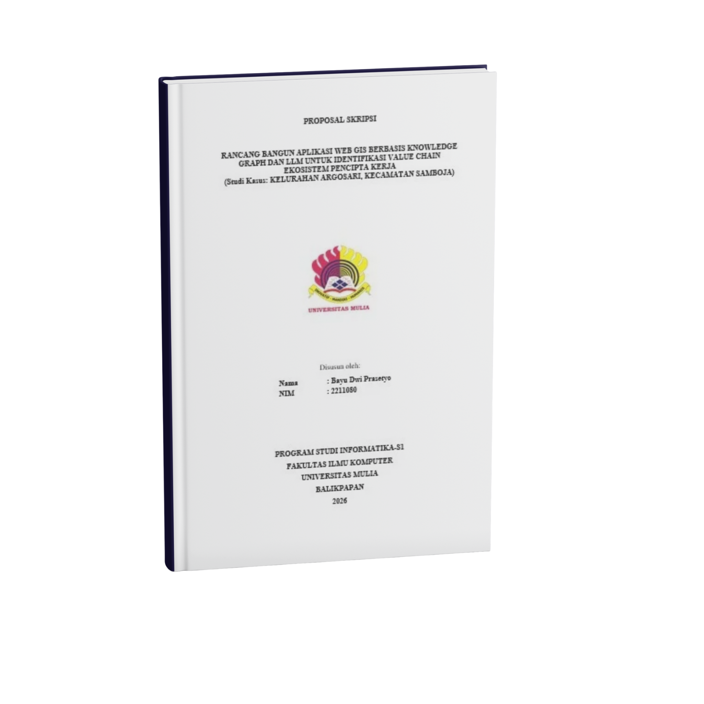

Membangun Jembatan Antara Teknologi Spasial dan Ekonomi Kerakyatan untuk Masa Depan yang Lebih Baik.

Halo, saya adalah mahasiswa tingkat akhir yang berfokus pada integrasi Artificial Intelligence (LLM) dengan data geografis untuk memecahkan masalah sosial-ekonomi di tingkat mikro.
2211080
S1 Informatika

Perkembangan Artificial Intelligence (AI) dan Geographic Information System (GIS) memberikan peluang besar dalam transformasi bisnis modern. Namun, di Indonesia, tantangan struktural seperti ketimpangan distribusi lapangan kerja dan kesenjangan keterampilan (mismatch) masih menjadi hambatan utama dalam pembangunan ekonomi nasional.
Fenomena Necessity Entrepreneurship (wirausaha karena terpaksa) sangat menonjol di wilayah seperti Kelurahan Argosari. Dampak pertambangan batubara telah mengganggu sektor agraria, sementara minimnya infrastruktur pasar fisik mempersulit masyarakat dalam menemukan peluang ekonomi baru.
Penelitian ini menawarkan solusi digital terintegrasi melalui Web GIS dan Knowledge Graph untuk memetakan aktor ekonomi dan rantai nilainya. Dengan bantuan Spatial Chatbot AI, masyarakat dapat mengidentifikasi potensi sumber daya di sekitar mereka dan mengubahnya menjadi gagasan bisnis yang terencana, bukan sekadar untuk bertahan hidup.
